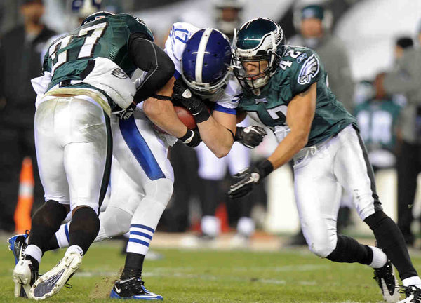

What is a Concussion?
“How do I define concussion? It’s an alteration of mental status brought on by a biomechanical force that may or may not include unconsciousness. Often there is no unconsciousness. In the spectrum of concussion, amnesia is worse than confusion, unconsciousness is worse than amnesia.”
- Dr. James P. Kelly, Director of the National Intrepid Center of Excellence for treating veterans with TBI and former neurologist for the Chicago Bears
